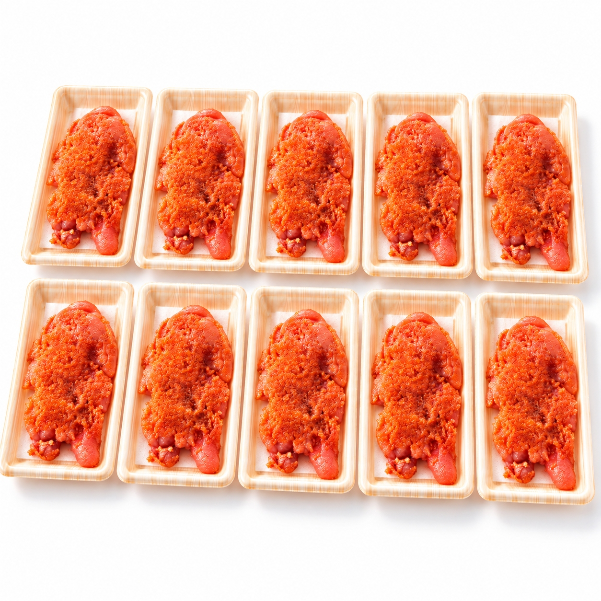
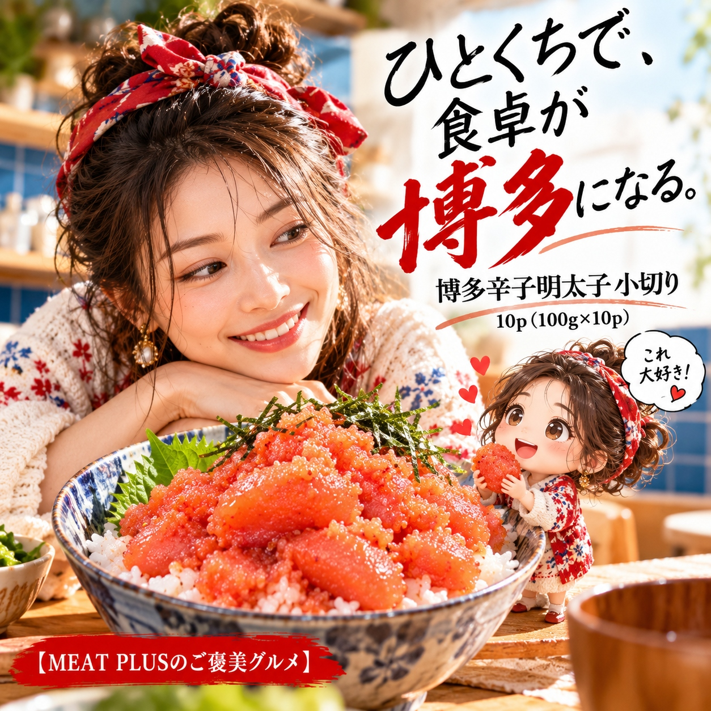

SCENE 01
M006

m 贈り物
博多辛子明太子 小切り 10ｐ
【ご飯がすすむ本場の味！便利な小分け博多辛子明太子1kg。】
- 内容量10ｐ（100ｇ×10ｐ）
- 保存冷凍
- 産地日本
商品の特徴を読む
炊き立ての白いご飯に、ピリッと旨い明太子。そんな至福のひとときを、いつでも手軽にお楽しみいただける「博多辛子明太子 小切り」を、たっぷり1kgでお届けします。本場博多で丁寧に作られたこだわりの味。厳選されたすけとうだらの卵を、白だしやワインなどを加えた秘伝の調味液にじっくりと漬け込み、まろやかで深みのある辛さに仕上げました。プチプチとした食感と、後から追いかけてくる豊かな旨みがたまりません。使いやすい小切りタイプなので、包丁やまな板も不要。さらに100gずつの小分けパックになっているため、使いたい分だけを解凍でき、残りは冷凍庫で鮮度を保ったまま保存できます。ご飯のお供はもちろん、パスタ、おにぎりの具、卵焼きなど、アレンジは自由自在。毎日の食卓に、博多の本格的な味わいを加えてみませんか。
公式サイトへ移動します。価格・在庫・配送条件は移動先で最終確認してください。

SCENE 02
厳選されたすけとうだらの卵を、白だしやワインなどを加えた秘伝の調味液にじっくりと漬け込み、まろやかで深みのある辛さに仕上げました。
SCENE 03
さらに100gずつの小分けパックになっているため、使いたい分だけを解凍でき、残りは冷凍庫で鮮度を保ったまま保存できます。
PRODUCT INFORMATION
購入前に確認したい商品情報
- 商品名
- 博多辛子明太子 小切り 10ｐ
- 商品規格
- 10ｐ（100ｇ×10ｐ）
- 保存方法
- 冷凍
- 原産国
- 日本
- 製造地
- 日本
- 賞味期限
- 発送日より3ヶ月
原材料
すけとうたらの卵(米国又はロシア)食塩、唐辛子、白だし、発酵調味料、ワイン/調味料(アミノ酸等)、酸化防止剤(V.C)、甘味料(ソルビット、ステビア)、ナイアシン、塩化マグネシウム、着色料(赤102、赤3)、発色剤(亜硝酸Na)、酵素、(一部に小麦·大豆·ゼラチンを含む)
FAQ
購入前のよくあるご質問
美味しい解凍方法を教えてください。
冷蔵庫でゆっくり解凍していただくのがおすすめです。お召し上がりになる分だけをパックのまま冷蔵庫に移し、半日～1日ほどかけて解凍すると、水っぽくならず美味しくいただけます。お急ぎの場合は、パックのまま流水解凍も可能です。
辛さのレベルはどのくらいですか？
どなたにも食べやすい、ピリッとした中にも旨みとまろやかさを感じられる中辛タイプです。辛いものが苦手な方やお子様には、マヨネーズと和えたり、加熱調理したりすると、よりマイルドにお楽しみいただけます。
MEAT PLUS OFFICIAL SHOP
【ご飯がすすむ本場の味！便利な小分け博多辛子明太子1kg。】
仕入れ・加工・梱包・発送まで自社で行うMEAT PLUSの公式オンラインショップでご注文いただけます。
公式オンラインショップで購入する商品選びの要点
博多辛子明太子 小切り 10ｐ。商品規格：10ｐ（100ｇ×10ｐ）。保存方法：冷凍。原産国：日本。製造地：日本。賞味期限：発送日より3ヶ月。
価格・在庫・配送日・送料・ギフト対応は、公式通販の商品ページで最新情報をご確認ください。
もう少し、見てみる？
こちらの商品もチェック